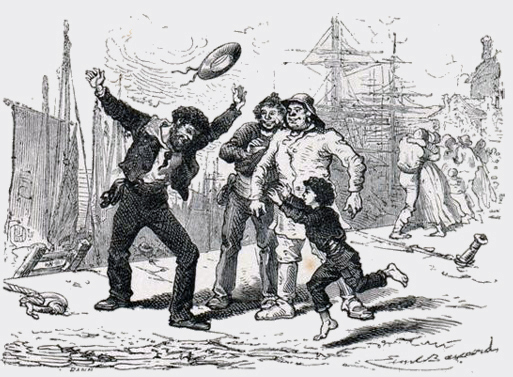

HẠN tái-đăng là ba năm nhưng cha tôi lại ở sáu năm. Khi cha tôi trở về thì tôi lên mười tuổi.
Hôm ấy là ngày chủ-nhật. Sau khi dự lễ Mi-Sa, tôi ra bến để xem tàu thương-chính về. Bên cạnh người cầm lái, tôi thấy một người lính thủy. Người đó dễ nhận vì mặc quân-phục, còn những người lính đoan thì vận áo va-rơ.
Đại-úy Huyên bỏ kính viễn-vọng xuống và bảo tôi:
– Do-Mạnh ơi! Cha em kia. Chạy xuống đón đi!

.Tôi cố chạy cho mau, song chân cứ rủn ra.
Đến nơi, tàu đã áp bến và cha tôi đã lên bộ rồi. Người ta xúm-xít chạy lại bắt tay cha tôi. Mấy người định kéo cha tôi đến tiệm để uống rượu.
Cha tôi nói:
– Để đến chiều, tôi phải về với vợ con tôi.
– Con anh đây, chưa trông thấy à?
Đến tối, trời lại mưa gió, chẳng ai buồn dậy thắp nến.
Trong sáu năm lữ hành cha tôi đã trông thấy nhiều điều lạ, và tôi là một thính-giả thường-trực của cha tôi. Trông bề ngoài, cha tôi cỏ vẻ nóng-nảy cục-cằn, nhưng bề trong, cha tôi là người rất chịu-đựng và ôn-tồn. Cha tôi chịu khó kể cho tôi nghe, không phải những chuyện cha tôi thích mà những chuyên hợp với trí tưởng-tượng thơ-ngây của tôi.
Trong những chuyện lạ đó có một chuyện tôi nghe, nghe mãi không chán và hỏỉ lại luôn: đó là chuyện nói về bác tôi. Trong dịp ghé bến Can-quít-Ta, cha tôi nghe nói có một Đại-tướng tên là Phổ-Hy hiện làm Đại-sứ bên cạnh vị Thống-Đốc Anh. Những chuyện nói về ông ta thực là thần-kỳ. Ông vốn là người Pháp, tình nguyện đầu quân giúp vua Ba-Ra. Trong một trận quyết liệt đánh quân Anh, ông đã mạo-hiểm và cứu được một đạo-quân Ấn-Độ. Do đó, ông được phong là Đại-tướng. Trong một trận khác, ông bị đạn bắn cụt hẳn một bàn tay. Ông cho làm một bàn tay giả bằng bạc thay vào. Khi trở về Thủ-Đô, ông dùng bàn tay bạc cầm cương ngựa.
Các thầy tu thấy thế đều quỳ cả xuống và cúi đầu thi lễ. Họ nói trong Kinh Thánh có chép lại rằng khi nào mà quân của nước họ được một người ngoại-quốc ở phương Tây đến chỉ-huy và vị tướng-lãnh đó có bàn tay bạc thì lúc đó nước Ba-Ra sẽ tới mức hùng-cường nhất. Cha tôi liền tìm đến yết-kiến Đại-tướng Phổ-Hy và được tiếp đãi rất nồng hậu. Trong tám ngày cha tôi được khoản-đãi như một ông Hoàng. Bác tôi có ý đưa cha tôi về Kinh-Thành xem nhưng, công-vụ rất nghiêm-chính, nên bác tôi không rời Can-quít-Ta được.
Chuyện này gây cho trí tôi một cảm-tưởng rất linh-hoạt: bác tôi chiếm hết cả tư-tưởng của tôi. Óc tôi chỉ mơ-màng đến voi, đến cảng. Mắt tòi chỉ trông thấy hai tên lính hầu có những bàn tay bạc theo sau bác tôi. Từ trước tôi vẫn cho người gác nhà Thờ làng tôi là oai nhất, nhưng bây giờ hai tên lính hầu của bác tôi làm cho tôi thương hại cái giáo mũi sắt và cái mũ có kết giải của người phu gác giáo-đường.
Thấy tôi hoan-cảm, cha tôi rất vui sướng nhưng mẹ tôi lại buồn.
Mẹ tôi nóỉ:
– Nói thế thì thằng Mạnh nó lại ham thích mạo-hiểm và đi biển.
– Thì nó sẽ làm như cha nó, và tại sao nó lại không làm như bác nó
«Làm như bác nó», cha tôi không ngờ câu nói đó đã đổ dầu thêm cho ngọn lửa chớm nhóm ở lòng tôi.
Mẹ tôi đành chịu cho tôi theo nghề đi biển. Nhưng lòng yêu thương vô hạn của mẹ tôi đã toan tính và muốn cho tôi bớt khổ nhọc trong bước đầu vào nghe vất-vả ấy. Mẹ tôi khuyên cha tôi thôi làm việc với Nhà-nước. Khi nào cha tôi đi đánh cá ở Ích-lan, tôi sẽ theo cha lôi để tập việc.
Dùng kế này, mẹ tôi mong giữ được cha tôi và tôi ở nhà ít ra cũng hết mùa đông, là mùa các người đánh cá đều trở về. Nhưng định-liệu của con người làm sao thắng được số trời?